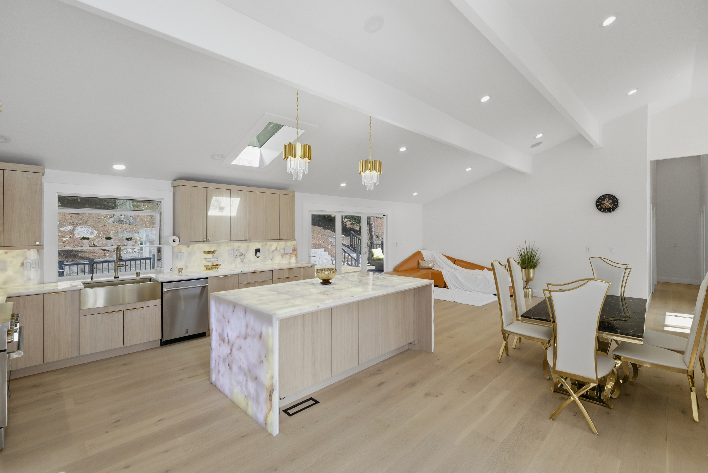
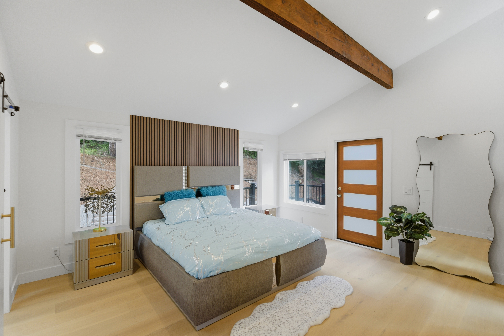
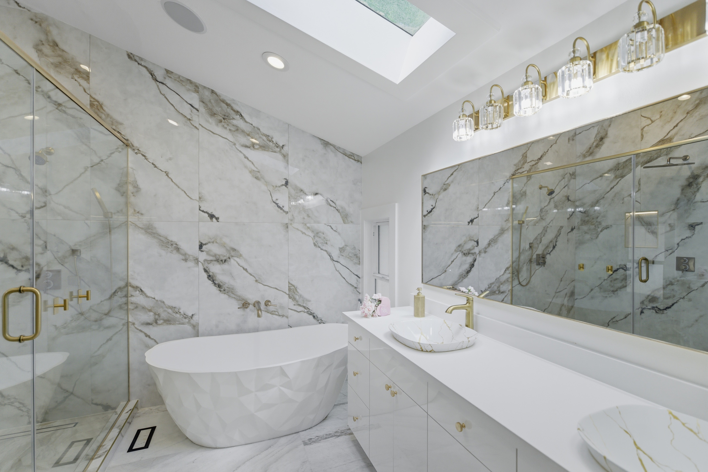

Gallery
Inside & out






Sammamish · Washington · 98075
A custom, designer-finished home on a spectacular half-acre lot — five bedrooms plus a private office, peek-a-boo lake views, and a chef's kitchen, one block from Lake Sammamish.
The Residence
Designer-upgraded and beautifully reimagined, this ultra-modern home offers exceptional craftsmanship, soaring ceilings, and high-end finishes throughout. Five bedrooms plus a dedicated private office/den provide flexible layouts for work, guests, and multi-generational living — all on a spectacular, park-like half-acre lot one block above East Lake Sammamish Parkway.
Thoughtfully updated with designer finishes throughout, this turnkey residence is truly move-in ready. The stunning chef's kitchen anchors the home with dramatic backlit onyx countertops, premium Belmont cabinetry, custom millwork, and high-end appliances. Spa-inspired bathrooms, engineered hardwood floors, and light-filled living spaces create a seamless blend of luxury and comfort — while peek-a-boo lake views fill the home with natural light.
Outside, a spectacular park-like setting unfolds with mature landscaping, winding pathways, private garden retreats, and expansive outdoor entertaining spaces. Two separate driveways provide ample room for an RV, boat, trailer, or additional vehicles — and the half-acre lot opens the door to ADU / DADU development and income-generating potential (buyer to verify). A rare offering combining modern luxury, privacy, and flexibility in an unbeatable Sammamish location.
Aerial & Walkthrough
Drone footage showcasing the half-acre lot, lake proximity, and surrounding Sammamish setting.
Gallery



Features & Finishes
Dramatic backlit onyx countertops, premium Belmont cabinetry, custom millwork, and high-end appliances.
Beautifully updated and refreshed throughout — modern comfort with nothing left to do but move in.
Five bedrooms plus a dedicated private office/den for flexible work and multi-generational living.
Designer spa bathrooms and engineered hardwood floors throughout the light-filled interior.
Two separate driveways with ample room for an RV, boat, trailer, or additional vehicles.
A 0.56-acre lot with potential for an accessory dwelling unit and income opportunities (buyer to verify).
Mature landscaping, winding pathways, private garden retreats, and expansive outdoor entertaining.
Seasonal lake views and abundant natural light, one block above E. Lake Sammamish Parkway.
Investment Upside
A rare 0.56-acre parcel with room to grow — meaningful upside for builders, investors, and multi-generational buyers alike.
With room on the lot for a detached accessory dwelling, this property offers more than a home — it offers options. (Subject to city approval; buyer to verify.)
A DADU can generate ongoing rental income. Proximity to Microsoft, Redmond, and the wider Eastside job market supports strong, year-round tenant demand.
Private, comfortable space for parents, adult children, or guests — together, yet independent. A premium that's increasingly hard to find.
A permitted, income-producing ADU/DADU can meaningfully increase a property's overall value and resale appeal, while keeping future flexibility open.
Illustrative only: comparable Eastside accessory dwellings can command meaningful monthly rents given the area's strong rental market — turning unused yard space into a potential income stream. Figures vary widely and are not a representation or guarantee of income; buyer to verify all numbers and feasibility independently.
Buyer to verify feasibility, eligibility, and all development potential with the City of Sammamish and King County. Information provided for convenience and not guaranteed.
Location & Lifestyle
Perfectly positioned between Redmond, Sammamish and Issaquah with quick access to I-90, this is one of the Eastside's most connected — yet tranquil — settings. Walk to the lake, bike the trail, and reach the region's largest employers, shopping, and dining in minutes.
to Lake Sammamish waterfront, beach-parks & trail
to Downtown Redmond & Microsoft
to Downtown Issaquah & I-90
to Bellevue & Seattle Eastside hubs
Education
~1.0 mile
~2.3 miles
~2.5 miles
Ratings via GreatSchools; buyers should confirm current boundaries with the Issaquah School District.
Questions
In Sammamish, WA (98075), one block above E. Lake Sammamish Parkway — about one street from the lake. It sits between Redmond, Issaquah and Sammamish with fast access to I-90.
Five bedrooms plus a dedicated private office/den, with flexible layouts for work and multi-generational living.
An ultra-modern chef's kitchen with dramatic backlit onyx countertops, premium Belmont cabinetry, custom millwork, and high-end appliances.
The highly rated Issaquah School District — Creekside Elementary, Pine Lake Middle, and Skyline High School (10/10).
The 0.56-acre lot, two driveways, and ample parking offer strong potential for an ADU or DADU and income-generating opportunities. Buyers should confirm feasibility with the City of Sammamish and King County.
A large 0.56-acre lot with spacious yards and a separate driveway (great for RV/boat parking or rental income). Washington HB 1096 administrative lot-split legislation and evolving middle-housing rules may offer added flexibility — buyer to verify feasibility with the City of Sammamish and King County.
Reach out through the contact section below and we'll arrange a private showing at your convenience.
Inquire
For pricing details, disclosures, or to arrange a tour, get in touch directly.
Sunayana Kannur
Sammamish, Washington